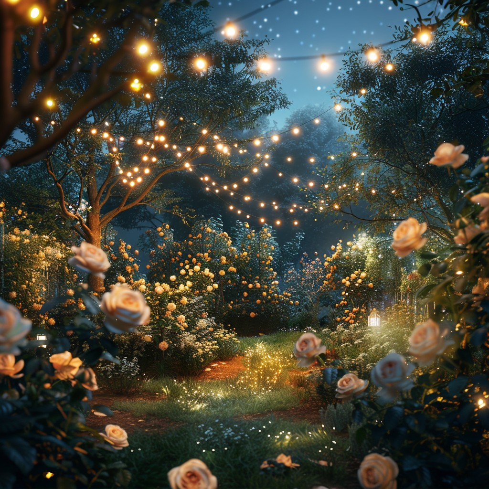

Discover Your Next Adventure at The Book Nook
Step inside The Book Nook, a unique bookstore tucked away in the vibrant Jewellery Quarter of Birmingham. We offer a curated collection of books for the soul, specializing in dark fantasy, enchanting magic, and thrilling adventures, perfect for even the bravest of young readers and those young at heart. Discover your next literary escape with us.
About The Book Nook
Established in 2010, The Book Nook is a hidden gem nestled in Birmingham's Jewellery Quarter. Our primary goal is to be a sanctuary for the bravest of young souls who dare to seek us out, offering a curated collection that celebrates the darker, more magical, and fantastical corners of children's literature. We believe in the power of stories that resonate with those who might feel unseen in the wider world of reading.
Here, you'll discover tales where adventures might not always have happy endings, where shadows dance with magic, and where the courage to explore the unknown is celebrated. We're more than just a bookstore; we're a nook for kindred spirits who understand that the most captivating stories often lie just beyond the ordinary.
Contact Us
Any questions, feel free to email us at: darksouls@booknook.com
Our Reading Nook: The Midnight Grove
Step through the pages and into The Midnight Grove, our enchanting reading nook where the magic of stories comes alive. Imagine a secluded forest clearing, bathed in the soft glow of hanging lanterns, where the rustling leaves whisper tales of wonder. Here, amidst the gently swaying branches and comfortable seating nestled among the trees, you'll discover a unique literary escape.
Join us each week for live readings in The Midnight Grove, where captivating storytellers will transport you to fantastical realms. And for the truly brave, keep an eye out for our monthly "Night of Wonders," a unique outdoor event where we venture into the woods to experience tales of horror and fantasy under the starlit sky. The Midnight Grove is more than just a reading space; it's an adventure waiting to unfold.